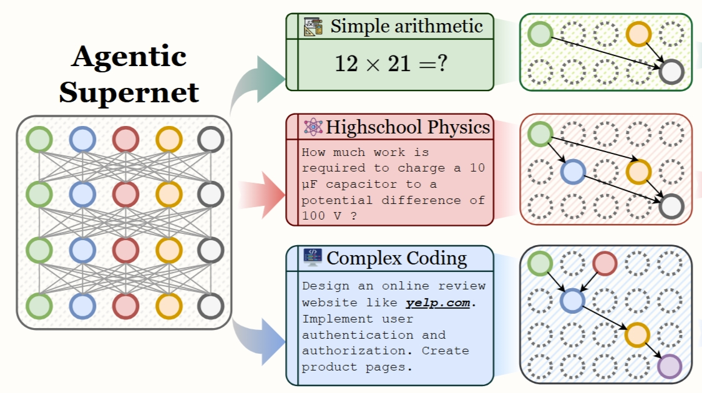
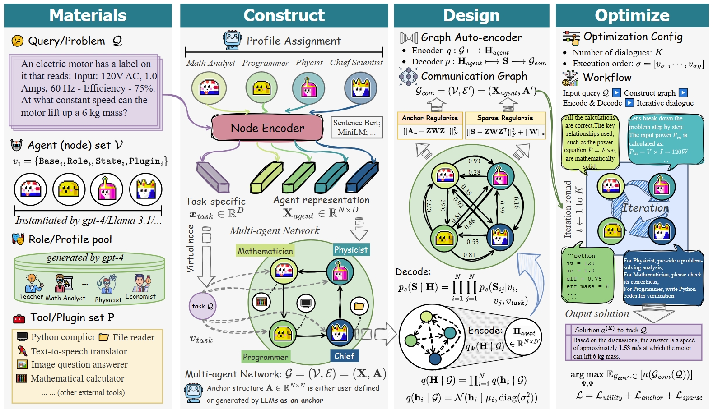
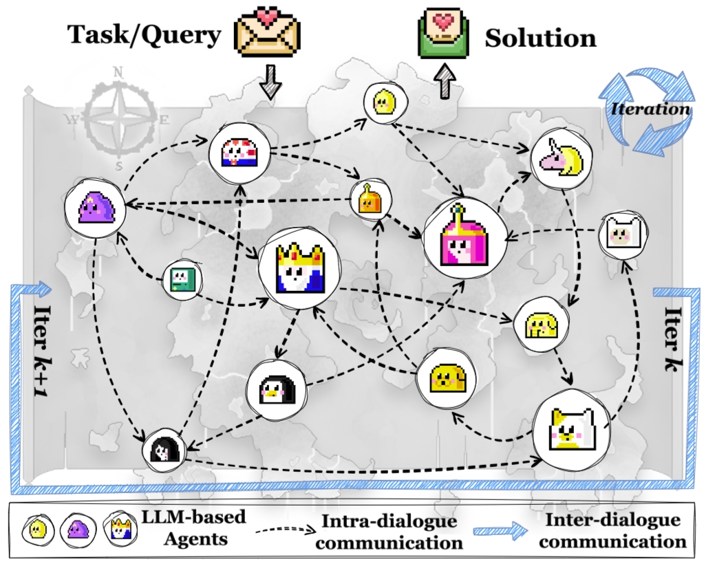
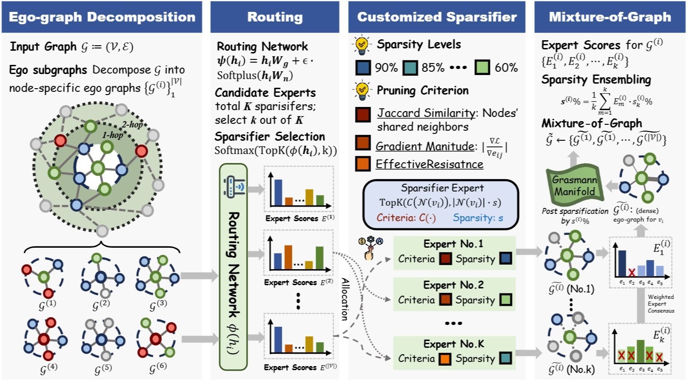
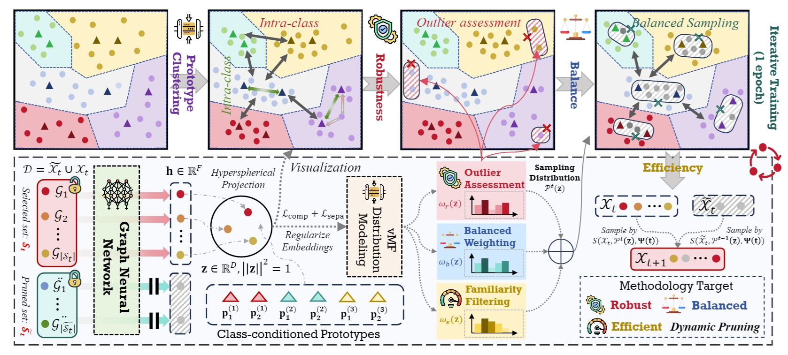

Guibin Zhang
{kind=link}
About Me
I am currently a 4th-year undergraduate student majoring in Data Science in Tongji University, and am an incoming PhD (2025 Fall) at School of Computing, National University of Singapore, supervised by Prof. Shuicheng Yan. I am also fortunate to work closely with Prof. Tianlong Chen, Prof. Shirui Pan, Prof. Dawei Cheng and Dr. Kun Wang.
Research Interests
- Agentic AI: multi-agent system, agentic RL, agent memory
- Efficient AI: sparsity, model lightweighting, LLM pruning
- Data-centric AI: data selection, data pruning, data cleaning
Selected Publications (Full List)
-
(† denotes Equal Contribution)
-

ICML'25International Conference on Machine Learning (ICML), 2025. -

ICML'25International Conference on Machine Learning (ICML), 2025. -

ICLR'25International Conference on Learning Representations (ICLR), 2025. -

ICLR'25International Conference on Learning Representations (ICLR), 2025. -

NeurIPS'24Annual Conference on Neural Information Processing Systems (NeruIPS), 2024. -
 KDD'24
Knowledge Discovery and Data Mining (KDD), 2024.
KDD'24
Knowledge Discovery and Data Mining (KDD), 2024.
Working Experience

Tongyi Lab, Alibaba Group
-
Research Intern, 2025
-
Research Topic: Agentic AI and Self-Evolving Agent
Alipay, Ant Group
-
Research Intern, 2025
-
Research Topic: Test-time Acceleration for LLMs
AI4Science Group, Shanghai AI Laboratory
-
Research Intern, 2024
-
Research Topic: LLM-based Multi-agent System

CS Department, The University of Hong Kong
-
Research Assistant, 2024
-
Research Topic: Graph-centric AI

FinAI, The International Digital Economy Academy (IDEA)
-
Research Intern, 2024 -
Research Topic: Data Augmentation for GNNs

CityMind Lab, The Hong Kong University of Science and Technology (GZ)
-
Research Intern, 2023 -
Research Topic: Graph Neural Network

FinTech Lab, Tongji University
-
Research Intern, 2022-2023 -
Research Topic: Graph Neural Networks for Financial Applications
Honors & Awards
- 2022, National Scholarship (Award Rate: 0.2% nation-wide)
- 2022, Merit Student in Tongji University
- 2024, National Champion (No.1) in the SAS Data Analysis Competition
- 2024, SenseTime Scholarship (25 Students nation-wide)
- 2025, Pacemaker to Academic Star in Tongji University
Departmental & Academic Service
- Conference Reviewer:
- 2024: ICML, ACM MM, KDD, NeurIPS
- 2025: AISTATS, WebConf, ICLR, ICML, NeurIPS, ACL, ICCV
- Journal Reviewer:
- TKDE, TKDD, DMLR, TNNLS, Pattern Recognition
- Association Officer, 2022-2023
- President of the association (Jiading Campus), 2023-2024
Powered by Jekyll and Minimal Light theme.